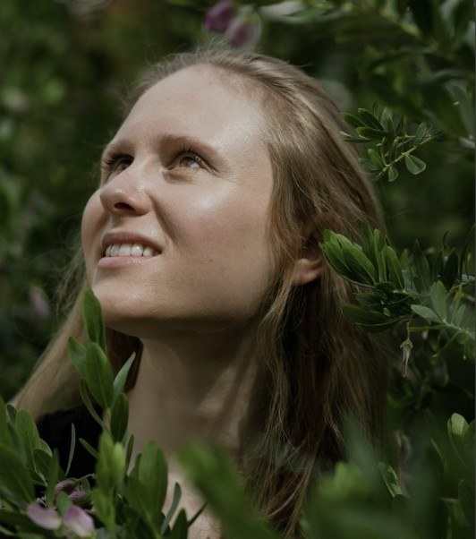

Venice's Red Priest, whose five hundred concertos taught string instruments to sing, and whose La Folia still catches fire.

The most complete musician who ever lived; his last string quintet says goodbye to chamber music with a grin.

Poet of the piano and inventor of the piano quintet, whose 1842 masterpiece closes the festival.

Russia's supreme melodist, who sketched his exuberant string sextet under the Florentine sun.

Teacher of Rachmaninoff and devoted disciple of Tchaikovsky, mourned him in a quartet of two cellos and glowing song.

French music's flawless watchmaker, whose Piano Trio was finished in a fever as the Great War began.

Hungary's musical conscience, who walked village to village saving folk songs, then set them dancing.

The festival's local spirit: an Anglo-Irish wanderer who made Kenmare his home and Kerry's landscape his music.

A Parisian chanson and its tender Japanese translation, the authors of Autumn Leaves, falling in slow motion.

Modern music's great consoler, from The Blue Notebooks to the score for the film Hamnet.

Cork's slyest musical mind, equally at home with skateboarders, sideshows and the northern lights.

California composer of euphoric, ecological music, tide pools and fault lines translated for string quartet.
A violinist-composer on a steep ascent, whose Violin Sonata was premiered by this festival's own Nathan Meltzer.